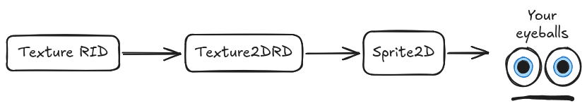
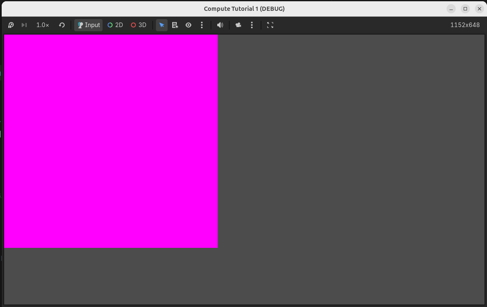
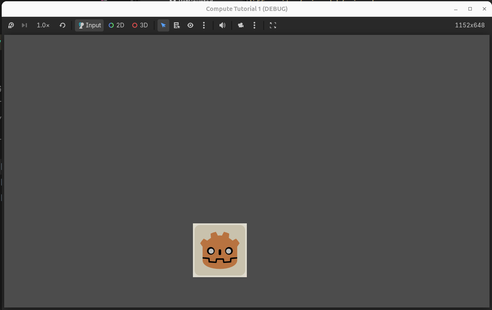
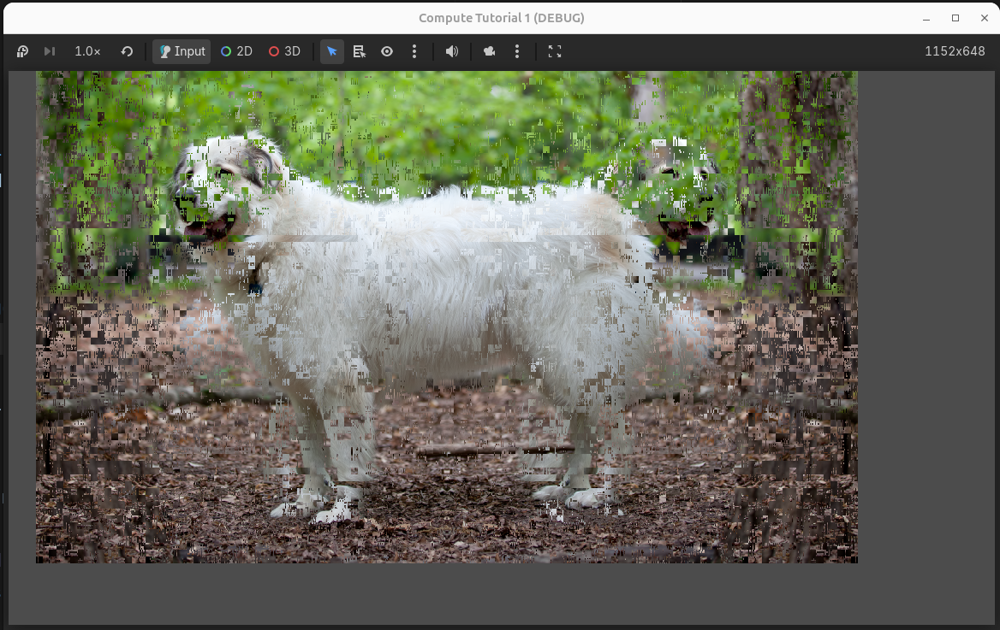
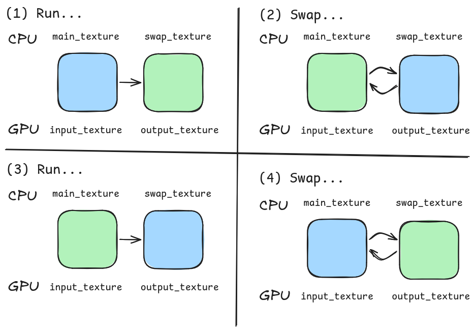
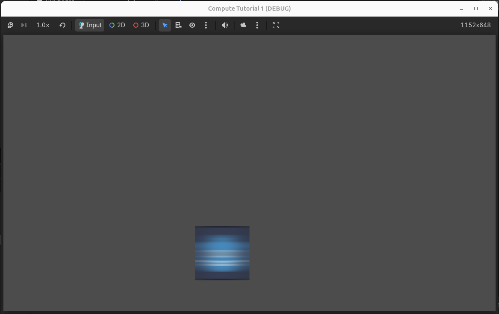

Writing compute shaders in Godot is currently a bit intimidating, requiring relatively low-level work for simple operations. The documentation for RenderingDevice, the primary way you setup and run compute shaders, straight up tells you to read the Vulkan guide if you’re confused. I’m writing this tutorial series as evidence that, for simpler use cases, this is usually not necessary. Compute shaders can be tremendously powerful and flexible, and you shouldn’t be intimidated by them.
This post covers reading from and writing to textures. I’ve often found myself manipulating textures via compute shaders and using them on-screen in vertex or fragment shaders. It’s also how you write compositor effects.
This tutorial started by copying the Heightmap Demo, but has simpler examples, more explanations, and some broader context on why it’s structured as it is.
This is an unofficial follow-up to the Godot compute shaders tutorial. I recommend you read that tutorial before reading this one.
Creating a blank image
To start, let’s create a blank image for our compute shader to work on. This is not the same thing as a Godot Image resource. Godot images are stored on the CPU and can be manipulated on the CPU with get_pixel and set_pixel, but the images we make will exist on the GPU in your game’s native graphics API, be that Vulkan, Metal, or D3D12 (Godot does not support compute shaders in OpenGL).
Depending on its configuration, an image can be…
- Used as a storage image (read from and written to on the GPU through shaders)
- Used with a sampler (for read-only use in vertex and fragment shaders)
- Both, at different points in the rendering process
Since our RenderingDevice code is so low-level, let’s first make a helper script called ComputeHelper. Instead of adding a new script to a Node, we’ll instead right-click in the FileSystem tab and select “Create New -> Script…”. Name the script compute_helper.gd.
The script should look like this:
extends RefCounted
class_name ComputeHelper
var device: RenderingDevice
func _init(device: RenderingDevice) -> void:
self.device = deviceMost scripts extend a Node or one of its descendants. Instead, this script extends RefCounted, which isn’t tied to any Node. Other scripts will make a new version of this script (“instantiate” it) and use it internally. To do this, they use the code ComputeHelper.new(device), which will call _init(device) and return the new ComputeHelper.
We can’t use _ready because that function is part of Node, not RefCounted - it runs after a Node and all its children have entered the scene.
You should recognize RenderingDevice from the Godot compute shaders tutorial. In Godot, you can use multiple RenderingDevice instances at once, so we need to use init to let the instantiator of ComputeHelper choose which rendering device to use.
Let’s add a function to ComputeHelper to create a blank texture and return its uniform:
var storage_default_bits: int = RenderingDevice.TEXTURE_USAGE_STORAGE_BIT
var sampling_default_bits: int = RenderingDevice.TEXTURE_USAGE_SAMPLING_BIT
var texture_clear_bits: int = RenderingDevice.TEXTURE_USAGE_COLOR_ATTACHMENT_BIT | RenderingDevice.TEXTURE_USAGE_CAN_COPY_TO_BIT
func storage_texture_uniform_blank(
width: int,
height: int,
binding: int,
format: RenderingDevice.DataFormat = RenderingDevice.DATA_FORMAT_R32G32B32A32_SFLOAT,
flags: int = storage_default_bits, # RenderingDevice.TextureUsageBits
clear_color: Color = Color.FUCHSIA
) -> RDUniform:
var image_format: RDTextureFormat = RDTextureFormat.new()
image_format.format = format
image_format.texture_type = RenderingDevice.TEXTURE_TYPE_2D
image_format.width = width
image_format.height = height
image_format.depth = 1
image_format.array_layers = 1
image_format.mipmaps = 1
image_format.usage_bits = flags
var rid = device.texture_create(image_format, RDTextureView.new())
if flags & texture_clear_bits == texture_clear_bits:
device.texture_clear(rid, clear_color, 0, 1, 0, 1)
var uniform = RDUniform.new()
uniform.uniform_type = RenderingDevice.UNIFORM_TYPE_IMAGE
uniform.binding = binding
uniform.add_id(rid)
return uniformThis creates a texture on the GPU, makes a uniform, and adds the texture to the uniform.
usage_bits is a bit-flag, a collection of boolean values. You can merge two bit-flags with |. For example, storage_default_bits | sampling_default_bits | texture_clear_bits would have the bits for storage, sampling, and texture clearing.
The usage_bits flags themselves are not super well-documented, and both adding and removing flags can cause errors or silent failures depending on where you use the texture. Here are the ones in the heightmap demo:
TEXTURE_USAGE_STORAGE_BIT- Lets this be used in compute shaders as a storage image, that is, manipulated.TEXTURE_USAGE_SAMPLING_BIT- allows this to be sampled for use in vertex and fragment shaders, and displayed viaTexture2DRD.TEXTURE_USAGE_COLOR_ATTACHMENT_BIT- letstexture_clearwork. Probably has other implications.TEXTURE_USAGE_CAN_COPY_TO_BIT- letstexture_clear, and probably other things, work.
The image RID is wrapped in an RDUniform, which will correspond to a Uniform in the compute shader. We could return the RID separately from the RDUniform. This is more flexible, since the texture could be used in multiple shaders, but it’s also less convenient, since you’ll usually need to make a uniform for the storage image, anyway. This sort of tradeoff is common for any abstracting library - simplifying functionality often means making some operations more difficult.
Displaying the image on-screen
You might notice that we haven’t written any compute shaders yet, so in this section… we’re still not going to write any compute shaders. Instead, we’re going to display the texture on-screen with Texture2DRD.

Make a new 2D scene. Change the type of the root node to “Sprite2D”, then move it 256 pixels down and to the right. Name the node “main”.
In the “Texture” property, make a new Texture2DRD. Then attach a new script to the node and name it main.gd.
extends Sprite2D
@export var texture_size: Vector2i = Vector2i(512, 512)
var device: RenderingDevice
var compute_helper: ComputeHelper
func _ready() -> void:
RenderingServer.call_on_render_thread(_setup_compute)
func _setup_compute() -> void:
device = RenderingServer.get_rendering_device()
compute_helper = ComputeHelper.new(device)
var device_texture = compute_helper.storage_texture_uniform_blank(
texture_size.x,
texture_size.y,
0, # binding index
RenderingDevice.DATA_FORMAT_R32G32B32A32_SFLOAT,
compute_helper.sampling_default_bits | compute_helper.storage_default_bits | compute_helper.texture_clear_bits
)
(texture as Texture2DRD).texture_rd_rid = device_texture.get_ids()[0]We fetch the global rendering device, store it in a member variable, and make a new ComputeHelper for that device. We use the compute helper to make a texture of the right size and set our Texture2DRD’s texture_rd_rid to match our texture.
RenderingServer.get_rendering_device gets the global rendering device, the same one used to render everything on the screen. You can also create a new local rendering device to set up and run the compute shader in a separate thread, at least from the CPU side. This can be more performant, but memory can’t be shared between rendering devices, so any texture accessible to the local rendering device won’t be visible to the global rendering device. Because of that, we use the global rendering device instead.
The format choice of RenderingDevice.DATA_FORMAT_R32G32B32A32_SFLOAT is deliberate. Vulkan can only use a few image formats as storage images - which ones differ from machine to machine, but there are three or four safe options. Vulkan can also only use certain formats with samplers, and Godot Images only support so many formats. If we take the intersection of all these sets, we get:
RenderingDevice.DATA_FORMAT_R32G32B32A32_SFLOATRenderingDevice.DATA_FORMAT_R8G8B8A8_UINT
You’ll usually use the first one. If you want more flexibility, you’ll want to use storage buffers, which can be in any data format you want.
If you press “Play”, you should see a magenta square. This is the texture you just created, rendering through Texture2DRD and Sprite2D.

Running a compute shader on the texture
Finally! In this section, we’ll read from and write to the texture we’ve made with a compute shader. We’ll just be inverting the image’s colors over and over again, but conceptually, this is a big step forward.
Let’s create a compute shader called invert.glsl. We need to use an external editor like Notepad++ to edit this.
Warning: if you create this as inside Godot with “FileSystem -> New TextFile…”, you can edit the shader in Godot, but the shader doesn’t seem to automatically syntax-check or recompile, which can be very frustrating.
#[compute]
#version 450
// Invocations per workgroup
// main.gd sets the number of workgroups
layout(local_size_x = 16, local_size_y = 16, local_size_z = 1) in;
layout(rgba32f, set = 0, binding = 0) uniform restrict image2D canvas;
void main() {
// assumes that gl_GlobalInvocationID's maxima match the image size
vec3 oldColor = imageLoad(canvas, ivec2(gl_GlobalInvocationID.xy)).rgb;
imageStore(canvas, ivec2(gl_GlobalInvocationID.xy), vec4(vec3(1.0) - oldColor, 1.0));
}canvas is an image2D, a 2D storage image, instead of the sampler2D you’d see in typical shaders. The layout of canvas is rgba32f, which matches our texture’s format. We use imageLoad(image2D, ivec2) and imageStore(image2D, ivec2, vec4) to read from and write to pixels. Unlike sampler2D, the texture coordinates are not normalized. In other words, instead of sampling with floating-point coordinates between (0,0) and (1,1), we sample with integer coordinates between (0,0) and (width-1,height-1). We’ll run our shader such that gl_GlobalInvocationID.xy is always within those bounds.
texture(Sampler2D, vec2) can sample “in between” pixels to smoothly blend between two or more colors. We can’t do that here, which is why we use integers and not floats.
You can use sampler2D in compute shaders, but you can’t use samplers to write to images, which (for us) is the whole point.
Now, let’s setup and run the shader in main.gd:
extends Sprite2D
# Both coordinates of texture_size should be multiples of 16
@export var texture_size: Vector2i = Vector2i(512, 512)
@export var run_rate: float = 0.5
# New member variables
var shader: RID
var uniform_set: RID
var compute_ready = false
# will call _run_compute every run_rate seconds
@onready var timer: Timer
func _ready() -> void:
timer = Timer.new()
add_child(timer)
timer.wait_time = run_rate
timer.timeout.connect(
RenderingServer.call_on_render_thread.bind(_run_compute)
)
timer.start()
RenderingServer.call_on_render_thread(_setup_compute)
func _exit_tree() -> void:
# this implictly frees uniforms and textures connected to the shader
device.free_rid(shader)
func _setup_compute() -> void:
# ... unchanged...
var shader_file: RDShaderFile = load("res://invert.glsl")
shader = device.shader_create_from_spirv(shader_file.get_spirv())
uniform_set = device.uniform_set_create([device_texture], shader, 0) # 0 = set ID
compute_ready = true
func _run_compute() -> void:
if not compute_ready:
return
var compute_list = device.compute_list_begin()
# 16 is the local size (defined in the compute shader).
# note that this only works if texture_size is divisble by 16.
var work_groups = texture_size / 16
var pipeline = device.compute_pipeline_create(shader)
device.compute_list_bind_compute_pipeline(compute_list, pipeline)
device.compute_list_bind_uniform_set(
compute_list,
uniform_set,
0 # set ID
)
device.compute_list_dispatch(
compute_list,
work_groups.x,
work_groups.y,
1 # z groups count
)
device.compute_list_end()
device.free_rid(pipeline)There are two new functions: _setup_compute (which should only run once) and _run_compute (which will run twice a second). Setting up and running the shader is nearly identical to the Godot tutorial, so I won’t go into much detail.
The details of the Timer code in _ready isn’t relevant to this tutorial, and just calls _run_compute regularly. If you’re having trouble, try removing it and calling _run_compute from process when the user presses a button.
During creation:
- Load the compute shader and create the intermediate SPIR-V bytecode that graphics card drivers use
- Make the texture and texture uniform [we already did this in the last section]
- Make the uniform set, which right now just has one uniform
- Set a variable to make sure
_run_computeonly happens after setup is complete
Every run:
- Make a compute list
- Make the compute pipeline
- Bind the compute pipeline and uniform set to our compute list
- Run the compute list
- Free the pipeline object from memory, since it can only be used once
Aside: If (like me) you aren’t familiar with Vulkan, you might be confused about why we need uniform sets at all, and what it means for uniforms to be in different sets. For Vulkan, these are Descriptor Sets. I believe uniform sets need to be updated all at once, and that there are a limited number of sets, at least four, with the number changing between machines. This means that, for performance, frequently-updated data should be in a different set from rarely-updated data.
Now, every five seconds, the image will invert between magenta (red + blue) and green (white - red - blue). This is a bit boring, but you can do quite a bit by expanding simple shaders like these.
Using an image instead of a blank texture
Let’s replace our magenta square with an actual image, like the Godot logo. Let’s make a new function in ComputeHelper.gd:
func get_format_for_storage(image_format: Image.Format) -> RenderingDevice.DataFormat:
var format
match image_format:
Image.FORMAT_RGBAF:
format = RenderingDevice.DATA_FORMAT_R32G32B32A32_SFLOAT
Image.FORMAT_RGBA8:
format = RenderingDevice.DATA_FORMAT_R8G8B8A8_UINT
_:
push_error("Image is not in a valid storage format")
return format
func storage_texture_uniform_from_image(
image: Image,
binding: int,
flags: int = storage_default_bits | texture_clear_bits,
) -> RDUniform:
assert(image.get_mipmap_count() == 0, "Storage images shouldn't have mipmaps")
var image_format: RDTextureFormat = RDTextureFormat.new()
image_format.format = get_format_for_storage(image.get_format())
image_format.texture_type = RenderingDevice.TEXTURE_TYPE_2D
image_format.width = image.get_width()
image_format.height = image.get_height()
image_format.depth = 1
image_format.array_layers = 1
image_format.mipmaps = 1
image_format.usage_bits = flags
var rid = device.texture_create(image_format, RDTextureView.new(), [image.get_data()])
var uniform = RDUniform.new()
uniform.uniform_type = RenderingDevice.UNIFORM_TYPE_IMAGE
uniform.binding = binding
uniform.add_id(rid)
return uniformThis is very similar to storage_texture_uniform_blank, but we use the Image to set width, height, format, and data of the new texture.
In our main script, we’re going to take a Godot Texture2D, get its image, and convert it to the format compatible with storage images, Image.FORMAT_RGBAF.
# Size needs to be divisible by 16
@export var test_texture: Texture2D
# remove existing texture_size variable
# ...
func _setup_compute() -> void:
device = RenderingServer.get_rendering_device()
compute_helper = ComputeHelper.new(device)
var image = test_texture.get_image()
image.convert(Image.FORMAT_RGBAF)
var device_texture = compute_helper.storage_texture_uniform_from_image(
image,
0, # binding
compute_helper.sampling_default_bits | compute_helper.storage_default_bits
)
# identical...
func _run_compute() -> void:
# ...
var work_groups = test_texture.get_size() / 16
# ...Now in the editor, in the properties tab, set test_texture to the Godot icon - or any image with a width and height divisible by 16.

Blurring an image
Inverting an image is pretty boring. Let’s try a slightly less boring horizontal box blur instead.
Blurring an image is fundamentally about combining a pixel and its neighbors. The absolute simplest blur, a “box blur”, takes the average of the pixel and its N neighbors in either direction. More advanced blurs will have closer neighbors contribute more than far-away neighbors, but let’s keep things simple.
#[compute]
#version 450
layout(local_size_x = 16, local_size_y = 16, local_size_z = 1) in;
// assume that outputImage is at least as big as inputImage
// also assume that the input image size is divisible by 16
layout(rgba32f, set = 0, binding = 0) uniform restrict readonly image2D inputImage;
layout(rgba32f, set = 0, binding = 1) uniform restrict writeonly image2D outputImage;
void main() {
// assumes that gl_GlobalInvocationID's maxima match the input image size
const float blurSize = 5.0;
vec4 outputValue = vec4(0.0);
// -5 -4 -3 -2 -1 0 1 2 3 4 5
for (float x = -blurSize; x <= blurSize; x++) {
vec2 px = gl_GlobalInvocationID.xy;
px.x = clamp(px.x + x, 0.0, imageSize(inputImage).x - 1.0);
outputValue += imageLoad(inputImage, ivec2(px));
}
outputValue /= blurSize * 2.0 + 1.0;
imageStore(outputImage, ivec2(gl_GlobalInvocationID.xy), outputValue);
}Unlike invert.glsl, this shader has two textures: a read-only input texture and a write-only output texture. This solves a concurrency problem. Conceptually, shaders run thousands of invocations of main() at the same time - in this case, one per pixel of the input texture. If one invocation writes to some data and another invocation reads from it, all else being equal, there’s no way to tell if the reader will see the old value or the new value. Along those same lines, if two or more operations write to the same piece of data concurrently, you can’t know which write will “win” and update the value last.
The Vulkan memory model calls this a data race, and tells you to avoid it. There are ways to synchronize access to data, especially within a single workgroup, but it’s easier and often safer to just make sure data races conceptually can’t happen - say, by separating the shader into a readonly input image and writeonly output image, where each invocation writes to its own pixel.
Just for fun, I made a compute shader that flips an image horizontally without separating the input and output images. After running the shader a few times, the result is pretty obviously corrupted:

Like the invert shader, I want to be able to apply the shader to the same image again and again, progressively blurring the image over time. To do this, we need to swap the input and output textures after each invocation. On the GDScript side, there is one “main” texture that we’ll use in the Texture2DRD, and one “swap” texture that we’ll use for the compute shader. This results in a cycle of running and swapping texture handles.

When we first run the compute shader, we read from the main texture and write to the swap texture. Then we exchange the main and swap texture handles - now, the former main texture is the swap texture, and the former swap texture is the main texture. We repeat this “run and exchange” process again, and the main and swap textures are back to where they were originally.
In main.gd, the member variables block will now look like this:
@export var test_texture: Texture2D
var device: RenderingDevice
var main_texture: RDUniform
var swap_texture: RDUniform
var compute_helper: ComputeHelper
var shader: RID
var compute_ready = falseNote how device_texture becomes main_texture, and how uniform_set no longer exists. Since we change the uniforms on every invocation, we need to re-create the uniform set in _compute_run, so it doesn’t need to exist outside of that function.
In _setup_compute, we’ll make two textures instead of one:
func _setup_compute() -> void:
# ...
var img = test_texture.get_image()
img.convert(Image.FORMAT_RGBAF)
main_texture = compute_helper.storage_texture_uniform_from_image(
img,
0, # binding
compute_helper.sampling_default_bits | compute_helper.storage_default_bits
)
swap_texture = compute_helper.storage_texture_uniform_blank(
img.get_width(),
img.get_height(),
1, # binding
RenderingDevice.DATA_FORMAT_R32G32B32A32_SFLOAT,
compute_helper.sampling_default_bits | compute_helper.storage_default_bits | compute_helper.texture_clear_bits
)
(texture as Texture2DRD).texture_rd_rid = main_texture.get_ids()[0]
# ...In _run_compute, uniform_set will be made on the fly on each shader invocation,
since we’re changing the RDUniform objects. After running the shader, we’ll
swap the main and swap texture IDs and make sure the Texture2DRD points to the most
recently updated texture.
func _run_compute() -> void:
# ... setup ...
var uniform_set = device.uniform_set_create([main_texture, swap_texture], shader, 0) # 0 = set ID
# ... run the shader ...
device.free_rid(pipeline)
# Swap the main and swap textures
var main_id = main_texture.get_ids()[0]
var swap_id = swap_texture.get_ids()[0]
main_texture.clear_ids()
swap_texture.clear_ids()
main_texture.add_id(swap_id)
swap_texture.add_id(main_id)
(texture as Texture2DRD).texture_rd_rid = swap_idAt this point, you’ll have a box blur that runs as long as you hold down the mouse button.

Conclusion
This general process can be extended to any kind of image or texture manipulation. I used it for a Power Wash Simulator clone to spray water onto surfaces, but I can imagine using it for something like MS Paint or for terrain generation. Keep in mind that storage images are not the best tool for general-purpose data manipulation – you should use storage buffers for that.
Here are some things to try if you want to experiment:
- Try replacing the box blur with a Gaussian blur or another convolution algorithm. Sharpeners, blurs, and edge detectors are all (mostly) based on the same basic trick.
- The current compute shader only works on images with sizes divisible by 16. To fix this, change the script to have enough workgroups to cover every pixel, then change the shader to not do anything if its invocation ID is outside the input image. Fun fact: image loads from outside the boundaries of an image will return all zeroes.
- Using two compute shaders, run a horizontal and then a vertical blur. If you do this, do you still need to exchange the main and swap textures after the invocation?
Next time, we’ll discuss storage buffers, uniform blocks, push constants, and the std140 + std430 layouts.